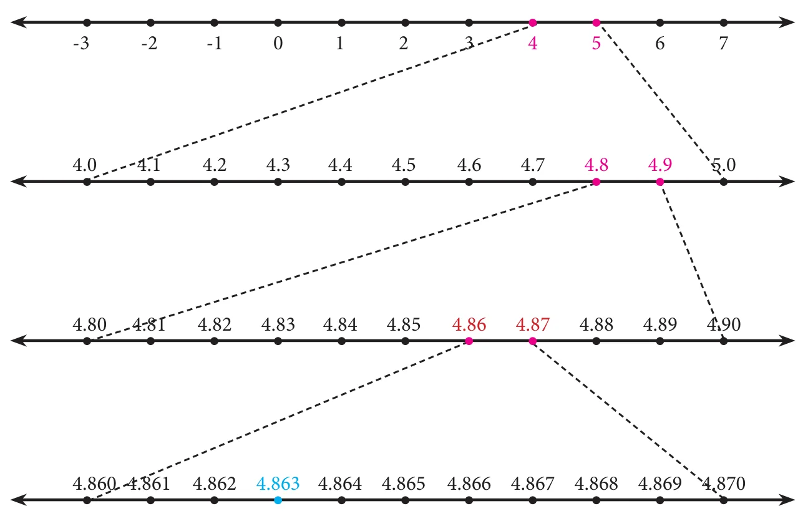
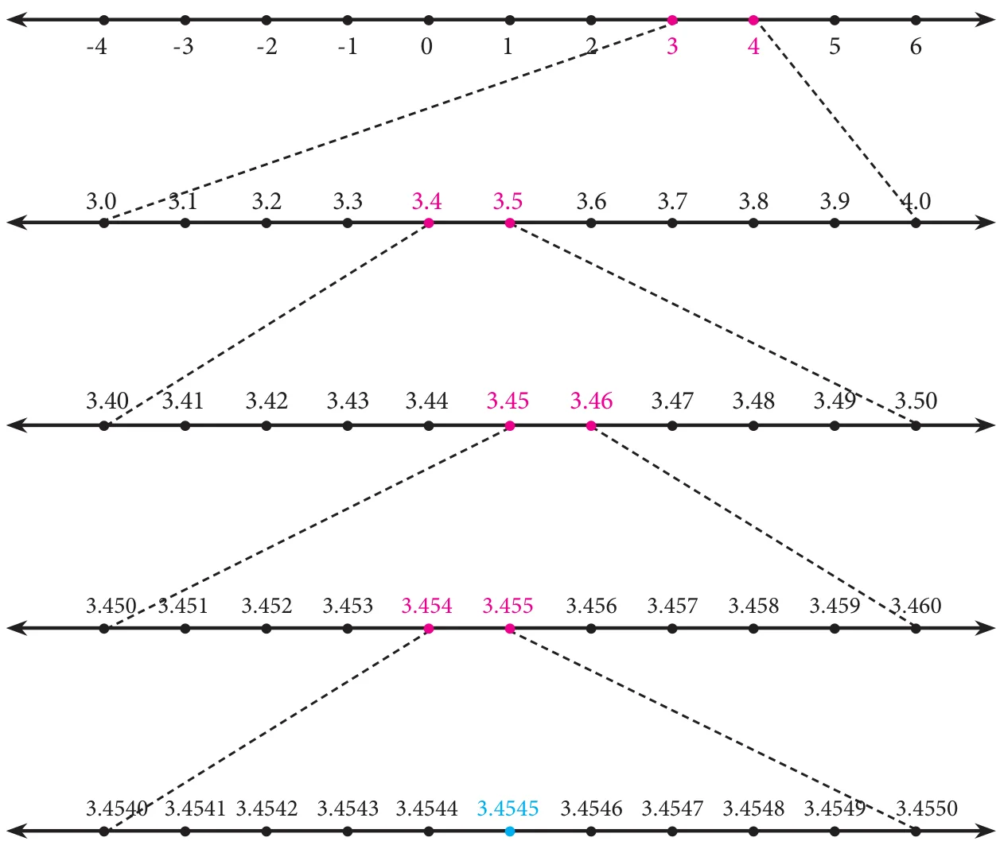

The real numbers consist of all the rational numbers and all the irrational numbers. Real numbers can be thought of as points on an infinitely long number line called the real line, where the points corresponding to integers are equally spaced.

Any real number can be determined by a possibly infinite decimal representation, (as we have already seen decimal representation of the rational numbers and the irrational numbers).
2.4.1 The Real Number Line
Visualisation through Successive Magnification.
We can visualise the representation of numbers on the number line, as if we glimpse through a magnifying glass.
Example 2.14
Represent 4.863 on the number line.
Solution
4.863 lies between 4 and 5(see Fig. 2.9)
- Divide the distance between 4 and 5 into 10 equal intervals.
- Mark the point 4.8 which is second from the left of 5 and eighth from the right of 4
- 4.86 lies between 4.8 and 4.9. Divide the distance into 10 equal intervals.
- Mark the point 4.86 which is fourth from the left of 4.9 and sixth from the right of 4.8
- 4.863 lies between 4.86 and 4.87. Divide the distance into 10 equal intervals.
- Mark point 4.863 which is seventh from the left of 4.87 and third from the right of 4.86.

Fig. 2.9
Example 2.15
Represent \(3.\overline{45}\) on the number line upto 4 decimal places.
Solution
\(3.\overline{45} = 3.45454545\ldots\)
\(= 3.4545\) ( correct to 4 decimal places).
The number lies between 3 and 4

Fig. 2.10